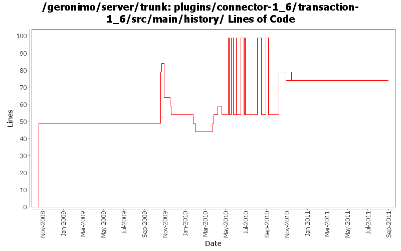

[root]/plugins/connector-1_6/transaction-1_6/src/main/history

| Author | Changes | Lines of Code | Lines per Change |
|---|---|---|---|
| Totals | 35 (100.0%) | 469 (100.0%) | 13.4 |
| djencks | 13 (37.1%) | 420 (89.6%) | 32.3 |
| rickmcguire | 8 (22.9%) | 25 (5.3%) | 3.1 |
| gawor | 8 (22.9%) | 15 (3.2%) | 1.8 |
| rwonly | 1 (2.9%) | 5 (1.1%) | 5.0 |
| xuhaihong | 3 (8.6%) | 2 (0.4%) | 0.6 |
| dwoods | 2 (5.7%) | 2 (0.4%) | 1.0 |
Update dependencies.xml file, including bval and commons-jexl changes
2 lines of code changed in 1 file:
remove snapshot versions of recently released components
0 lines of code changed in 1 file:
GERONIMO-5655 switch to tomcat standard taglibs
5 lines of code changed in 1 file:
switch to released version of activemq
0 lines of code changed in 1 file:
GERONIMO-5230 Add Bean Validation Support to the connector 1.6 implementation.
Changes to Geronimo base.
25 lines of code changed in 1 file:
update dependencies
0 lines of code changed in 1 file:
GERONIMO-434 for ee jndi go back to getting the connection factory each time from the connection manager since osgi jndi caches the connection factory for us
45 lines of code changed in 1 file:
fix build break
0 lines of code changed in 1 file:
GERONIMO-5066 Fix a lot of problems with jndi including wrong finders and inconsistent adding of injections
45 lines of code changed in 1 file:
Dependency updates
0 lines of code changed in 1 file:
cf openejb rev 958340. marshal persistence.xml in the correct namespace, marshal methods names changed
45 lines of code changed in 1 file:
upgrade dependencies to newer verions
0 lines of code changed in 1 file:
GERONIMO-5380 Allow exposing gbeans as osgi services (or service factories). Replace the specialized code in connector with this new generic code. This is not serialziation compatible with old GBeanInfo and GBeanData
45 lines of code changed in 1 file:
remove unneeded backport-util dependency
0 lines of code changed in 1 file:
GERONIMO-5025, GERONIMO-5117. Make jndi supported directly by Modules and straighten out which contexts are shared when.
45 lines of code changed in 1 file:
a. remove the use of configurationUrl \n b. Add a BundleAwareReference interface
0 lines of code changed in 1 file:
GERONIMO-5025 support for jndi configuration in application.xml (part 2)
45 lines of code changed in 1 file:
Use servicemix bundlized Quartz
0 lines of code changed in 1 file:
GERONIMO-5290 fix many of the deprecation warnings from maven 3
45 lines of code changed in 1 file:
install & start aries jmx bundles in rmi-naming plugin
0 lines of code changed in 1 file:
GERONIMO-5113: Mostly complete support for @DataSourceDefinition(s) annotations
5 lines of code changed in 1 file:
add blueprint dependency to remove some unresolved dependency errors at build time
5 lines of code changed in 1 file:
GERONIMO-5203: Register JTA services in service registry and install Aries transaction extensions for blueprint
5 lines of code changed in 1 file:
add howl bundle to j2ee plugin so that geronimo-transaction is wired correctly. fixes the howl class load problems on startup
0 lines of code changed in 1 file:
GERONIMO-4996 GERONIMO-5025 separate jndi context setup from web app context since jsf needs it too. Hook up myfaces which now starts. Don't know if myfaces works
0 lines of code changed in 1 file:
cleanup connector stuff a bit
0 lines of code changed in 1 file:
some jetty plugin cleanup
0 lines of code changed in 1 file:
regenerate dependencies for a couple of plugins
0 lines of code changed in 1 file:
use servicemix howl bundle that I didnt notice before creating one of our uwn, thanks rick
5 lines of code changed in 1 file:
start work on connector_1.6. Builds up through geronimo-connector-builder
5 lines of code changed in 1 file:
move packages to avoid split-packagle problems with tx components
31 lines of code changed in 1 file:
missed updating some jpa10 config and deployer depends
1 lines of code changed in 1 file:
update other XML files with embedded versions from 2.2-SNAPSHOT to 3.0-SNAPSHOT
1 lines of code changed in 1 file:
GERONIMO-4692 the last few dependencies.xml sorted
15 lines of code changed in 1 file:
GERONIMO-4360 make copy of connector plugin area for 1.6 spec implementation work. Hopefully the diff part of this change can be reverted when we actually move to 1.6 spec
49 lines of code changed in 1 file: